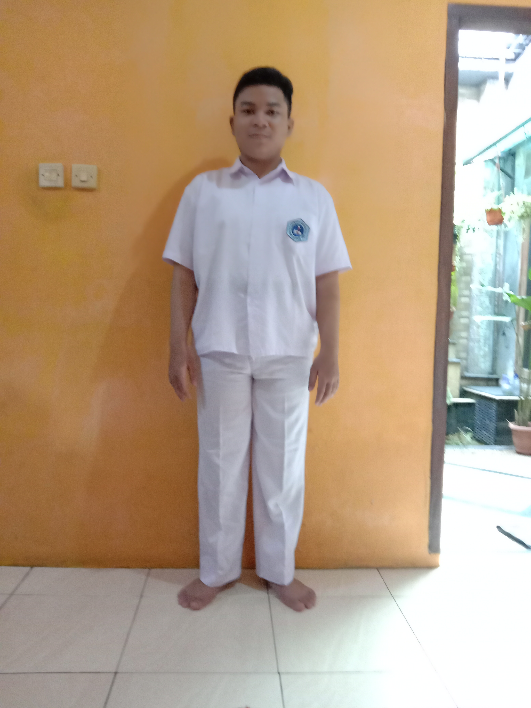

| Nama Depan | Nama Belakang | Umur | Foto |
|---|---|---|---|
| Ivanda Yuan | Dwi Bagaskoro | 16 |  |
Pengalaman saya dalam pembelajaran jarak jauh selama pandemi Covid-19 adalah selama PJJ saya sering sekali merasa tidak bersemangat belajar, karena saat belajar saya sedang di rumah bukan di sekolah sehingga suasananya kurang mendukung dan karena saat belajar sering menatap layar ponsel ataupun laptop membuat saya sulit untuk fokus.
Meskipun begitu, PJJ di rumah juga bukanlah hal yang buruk karena saat berada di rumah waktu berkumpul dengan keluarga menjadi lebih banyak dan memiliki lebih banyak waktu untuk istirahat daripada saat bersekolah offline.